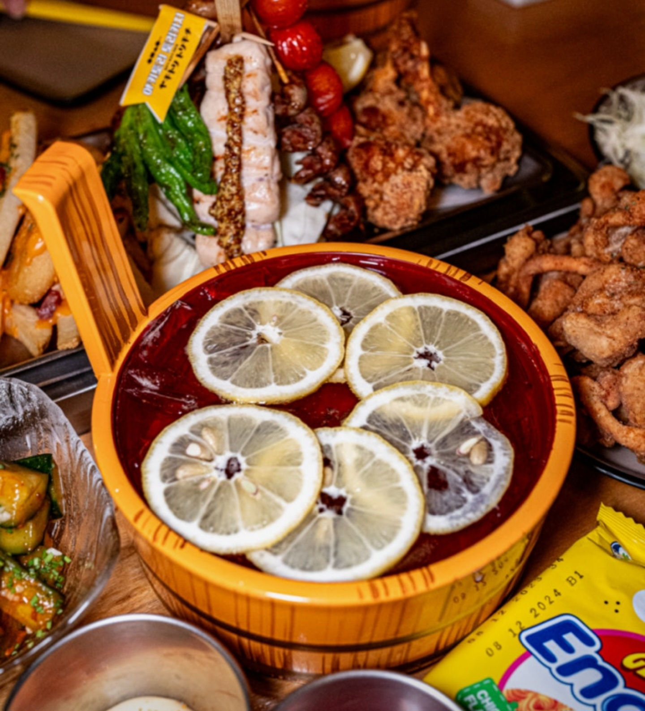
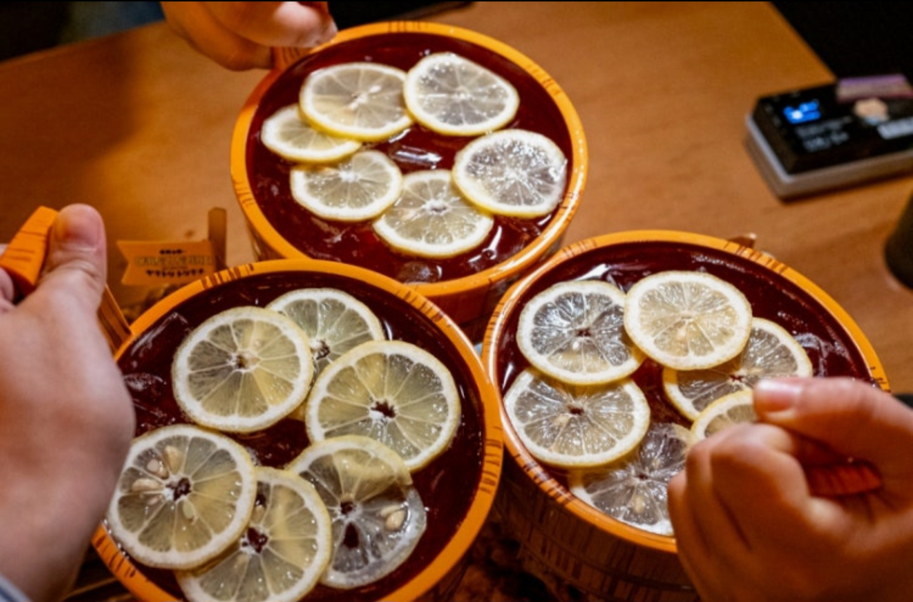
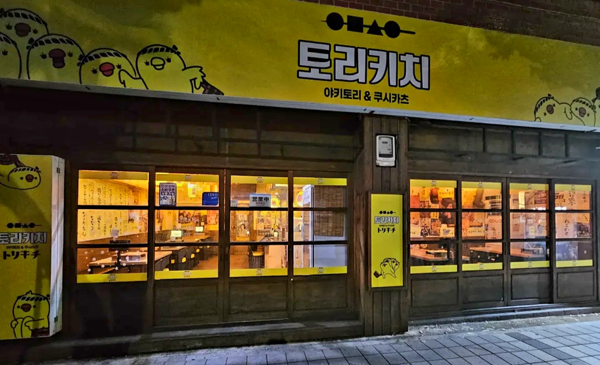

요즘 제일 핫한 토리키치 No.1 시그니처 메뉴
균일한 온도와 정직한 정성으로 굽습니다
토리키치 대연점은 어느 매장에서도 느낄 수 없는 균일하고 정직한 맛을 유지합니다. 신선한 재료와 숙련된 솜씨로 굽는 야키토리는 술 한 잔의 가치를 더해줍니다.
Threads
Instagram
대연동 최고의 야키토리 라인업

매장 주소
부산 남구 유엔평화로 11 1층
운영 시간
매일 17:00 - 02:00
* 본 매장은 해피아워를 운영하지 않습니다.

토리가 기다리는 대연동 아늑한 아지트